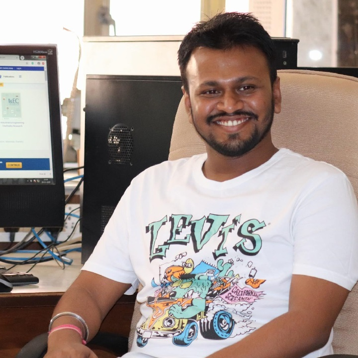

Ph.D. Research Scholar at IIT Bombay
Priyam Nayak
Ph.D. Scholar at Department of Chemical Engineering, IIT Bombay and Project Research Scientist at FOSSEE Project, IIT Bombay.

About
Welcome!
Welcome! I’m Priyam Nayak, a Ph.D. scholar at the Department of Chemical Engineering, IIT Bombay.
I am currently pursuing Ph.D. from the Department of Chemical Engineering at the Indian Institute of Technology Bombay (Powai, India), with a focus on Modeling, Simulation, and Optimization. Specifically, I am delving into the captivating realm of Fluidized Catalytic Cracking Units (FCCU). Guided by the brilliant minds of Prof. Kannan Moudgalya and Prof. Sanjay Mahajani, I am passionately exploring innovative approaches to enhance efficiency and performance within this field. My research work is funded by FOSSEE project where I also work as a Project Research Scientist. The FOSSEE project is part of the National Mission on Education through Information and Communication Technology (ICT), Ministry of Education (MoE), Government of India. Through my research work, I aim to contribute to the advancement of knowledge and make a positive impact on the industry.
Background
My background and history
My journey in Chemical Engineering began with a B.Tech degree from School of Chemical and Biotechnology at the SASTRA Deemed University. Following my graduation, I gained valuable experience as an Associate System Engineer at IBM India Pvt. Ltd., where I honed my skills in problem-solving and teamwork. However, my passion for research and innovation led me to join the FOSSEE project at IIT Bombay, where I started as a Project Research Assistant and progressed to become an Assistant Project Manager and eventually a Project Research Scientist. Within the FOSSEE project, I have leveraged my expertise in Free and Open Source Software, utilizing tools such as DWSIM and OpenModelica for Modeling and Simulation purposes. I am proud to have been recognized as an Outstanding Young Chemical Engineer (OYCE-2020) in the working professional category by the Indian Institute of Chemical Engineers IIChE-MRC. As I continue to grow and learn, I am eager to connect with fellow professionals and explore collaborative opportunities that will drive advancements in the fascinating world of Chemical Engineering.
Explore
Connect